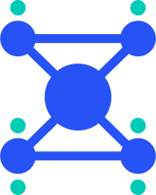

PlatformX 功能测试报告
开源模型驱动的办公 / 开发 / 设计工作台 · v1.6.0
60用例总数
100%通过率
4缺陷（已全部修复）
0控制台错误 / 失败请求
结论摘要
- 核心链路可用：首页输入 → 步骤推进 → 逐字输出 → 产物卡片 → 本地留痕，办公、开发、设计三类任务均实测跑通。
- 输入区符合预期：增强提示词 → 模型选择 → 语音输入 → 发送 顺序正确，10 个开源模型逐个切换均生效。
- 状态一致：任务、资料、收藏、模型与网关配置刷新后全部保留，侧栏计数与实际数据同步。
- 布局稳定：9 个主视图、6 档宽度（1440→430）均无横向溢出，窄屏抽屉可正常展开与收起。
- 质量问题已闭环：本轮发现 4 个缺陷（3 中 1 低），修复后回归通过，无遗留阻塞项。
- 套餐与支付：套餐支持月付/年付双价（标准版 ¥9/月 · ¥88/年，专业版 ¥99/月 · ¥888/年），套餐购买与积分充值均走微信/支付宝扫码支付弹窗，支付方式可切换，模拟到账后套餐与积分即时生效。
模块覆盖
启动与资源4 / 4
首页与模式3 / 3
输入区（模型 / 语音 / 增强）11 / 11
任务执行6 / 6
能力管理（专家 / 技能 / 连接器）3 / 3
资料库5 / 5
项目2 / 2
自动化1 / 1
设置与自定义模型（含测试连接）8 / 8
套餐与积分（月付/年付 + 扫码支付）5 / 5
命令面板1 / 1
快捷键与持久化2 / 2
附加场景（附件 / 引用 / 模板 / 面板）4 / 4
响应式与视图巡检3 / 3
稳定性（控制台 / 网络）2 / 2
缺陷与修复
BUG-01 添加菜单缺少「连接器」入口 中
- 现象
- 输入区 “+” 菜单仅有文件、资料库、技能、专家四项，无法从任务内进入连接器。
- 根因
addMenuPopover()只渲染 4 个分支，与「可添加文件、技能、专家和连接器」的需求不符。- 修复
- 新增「接入连接器」项（显示已连接数量），选择后跳转连接器页。
- 验证
- C6 通过，五个入口齐全。
BUG-02 上传资料后列表与侧栏计数不刷新 中
- 现象
- 提示「已上传 1 份资料」，但侧栏仍为 10，列表不出现新文件；处于分类筛选时新文件完全不可见。
- 根因
- 上传回调只更新了
state.docs与页面主体，未调用renderNav()，也未重置docFilter。 - 修复
- 上传后重置筛选为「全部」，同步刷新侧栏、上下文面板与列表。
- 验证
- F5 通过，10 → 11 份，新文件置顶且计数正确。
BUG-03 停止任务后状态显示错误 中
- 现象
- 点「停止」后步骤区显示「已停止」，顶栏仍是「执行中」；重进任务又变「已完成」。
- 根因
- 停止只改
task.status，未同步顶栏文本；完成态没有区分「正常完成」与「用户停止」。 - 修复
- 新增
stopped标记与taskStatusText()（执行中 / 已停止 / 已完成），停止与完成写回共用同一函数，避免互相覆盖。 - 验证
- D6 通过，状态为「已停止」，3 个未完成步骤标记跳过。
BUG-04 上下文面板不显示当前项目 低
- 现象
- 通过项目新建任务后，输入区显示项目名，但右侧上下文面板没有项目字段。
- 根因
renderContext()的工作区信息组缺少项目项。- 修复
- 增加「项目」行，未绑定时显示「未绑定」。
- 验证
- G2 通过，输入区与面板项目一致。
首轮执行 31/44：其中 10 项为测试脚本自身的断言问题（嵌套文本比较、异步等待窗口过短、移动端入口选择器取错），修正后复测；另 1 项首轮判定过松，加严为「必须为已停止」后暴露 BUG-03。
风险与未覆盖项
| 类别 | 说明 | 建议 |
|---|---|---|
| 真实推理 | 回复由 buildPlan() 本地模板生成，未接 vLLM / SGLang / Ollama 网关。 | 接网关后补一轮真实输出回归：超时、流式中断、长上下文。 |
| 语音识别 | finishVoice() 写入按模式预设的示例文本，未接 ASR。 | 补权限拒绝、无麦克风、噪声、长语音场景。 |
| 并发 / 长会话 | 未测多任务并行、单任务上百轮对话、200 条任务上限。 | 做压力用例，观察 localStorage 体积与渲染耗时。 |
| 大文件 | 仅测 4KB 文本上传，未实测 100MB 附件与拖拽。 | 补拖拽、超大文件、同名覆盖。 |
| 浏览器 | 仅覆盖 Chrome 155。 | 补 Safari / Firefox / Edge，重点看滚动条宽度与背景滤镜。 |
| 无障碍 | 仅覆盖 Esc / ⌘K / ⌘N，未做读屏与焦点陷阱。 | 弹窗补 focus trap 与 aria 标注。 |
| 数据安全 | 自定义模型的 API Key 明文存于 localStorage，任何本地脚本可读取。 | 生产环境改为后端代理持有密钥，前端只存引用 ID。 |
| 跨域限制 | 浏览器直连第三方 API 受 CORS 约束，file:// 打开时可能被拦截（结果条已提示）。 | 部署到 http(s) 服务，或统一走自建网关并开启跨域。 |
| 测试连接覆盖面 | 真实链路验证到 401 / 404 / 超时分类，未用有效密钥验证 200 成功态。 | 用沙箱密钥补成功态与模型列表解析用例。 |
过程截图


复现方式
依赖 Node 22 与 puppeteer-core，脚本会清空 localStorage 后从零执行 60 条用例：
node platformx/qa/px-test.mjs
产出：qa/qa-result.json（逐条结果）· qa/shots/*.png（截图）。
两处「接真实后端」的替换点：buildPlan()（推理）与 finishVoice()（ASR）。